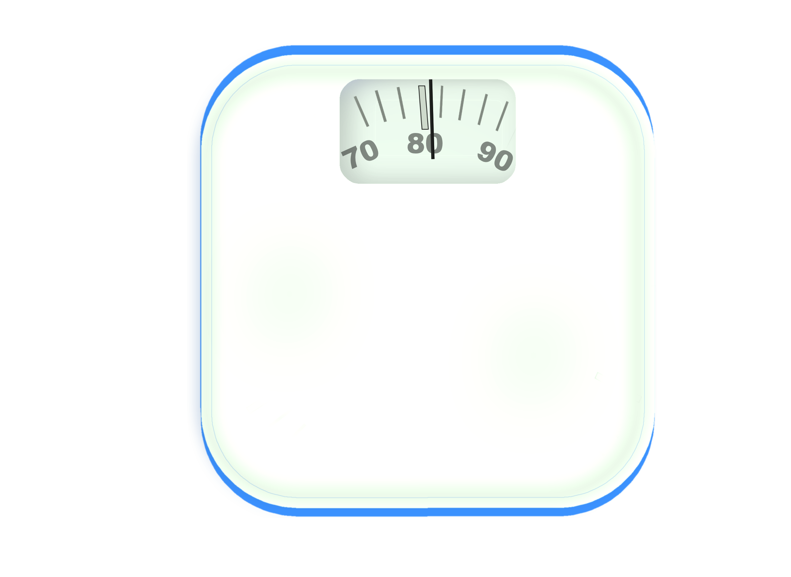

Conoce si tu peso se encuentra dentro de un rango saludable
El Índice de Masa Corporal (IMC) es una medida utilizada para relacionar el peso y la estatura de una persona. Permite identificar si una persona se encuentra en un rango de peso bajo, normal, sobrepeso u obesidad.
Aunque no mide directamente la grasa corporal, es una herramienta sencilla y ampliamente utilizada por profesionales de la salud para evaluar el estado nutricional.

| IMC | Clasificación |
|---|---|
| Menor de 18.5 | Bajo peso |
| 18.5 - 24.9 | Peso normal |
| 25 - 29.9 | Sobrepeso |
| 30 o más | Obesidad |